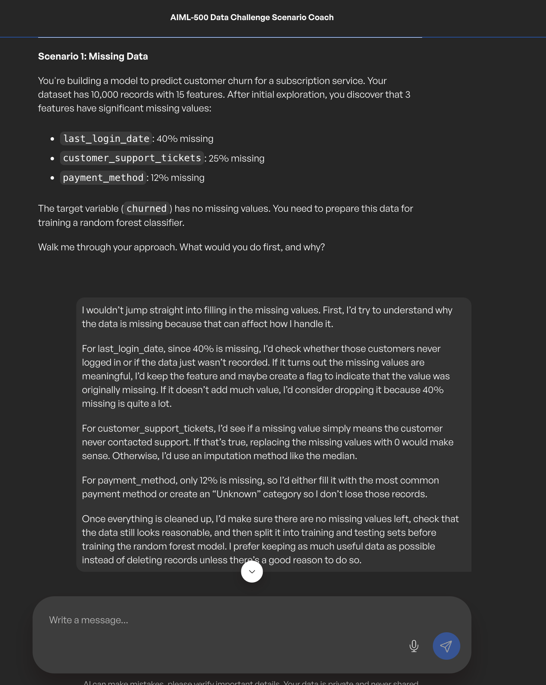
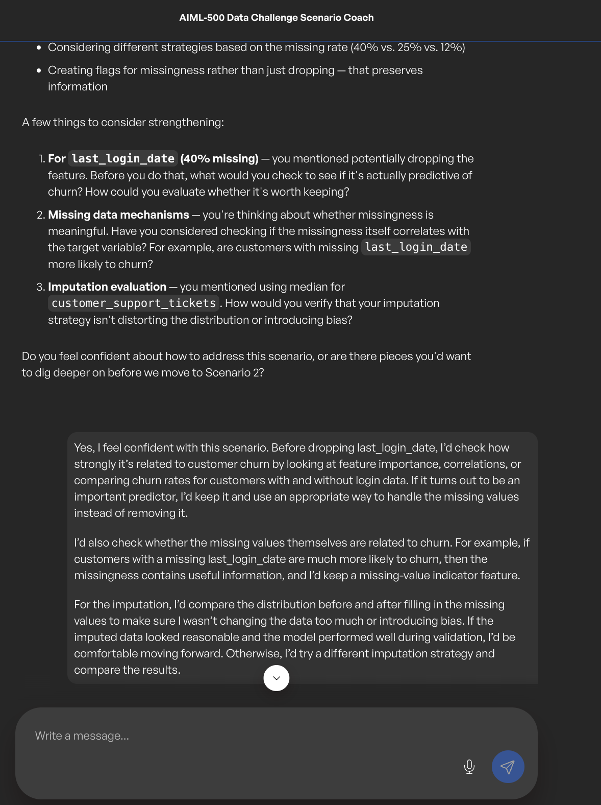
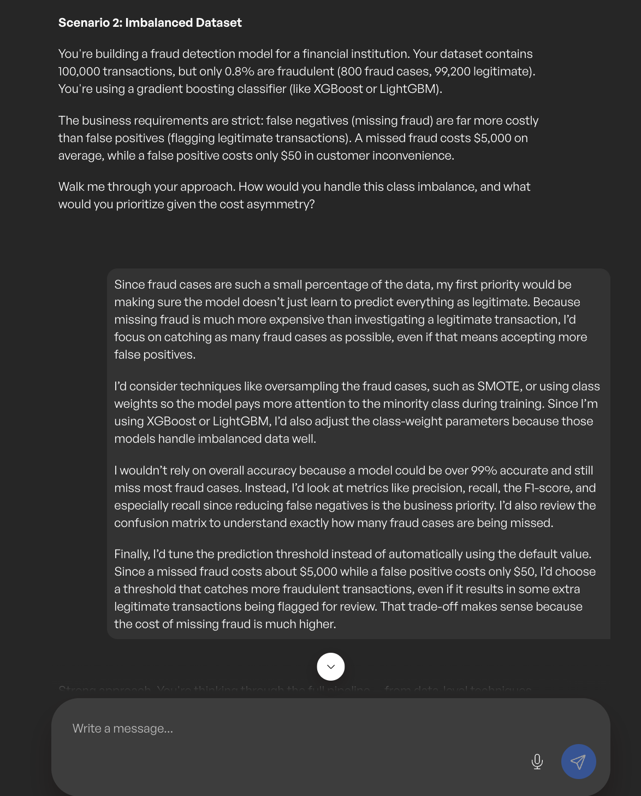
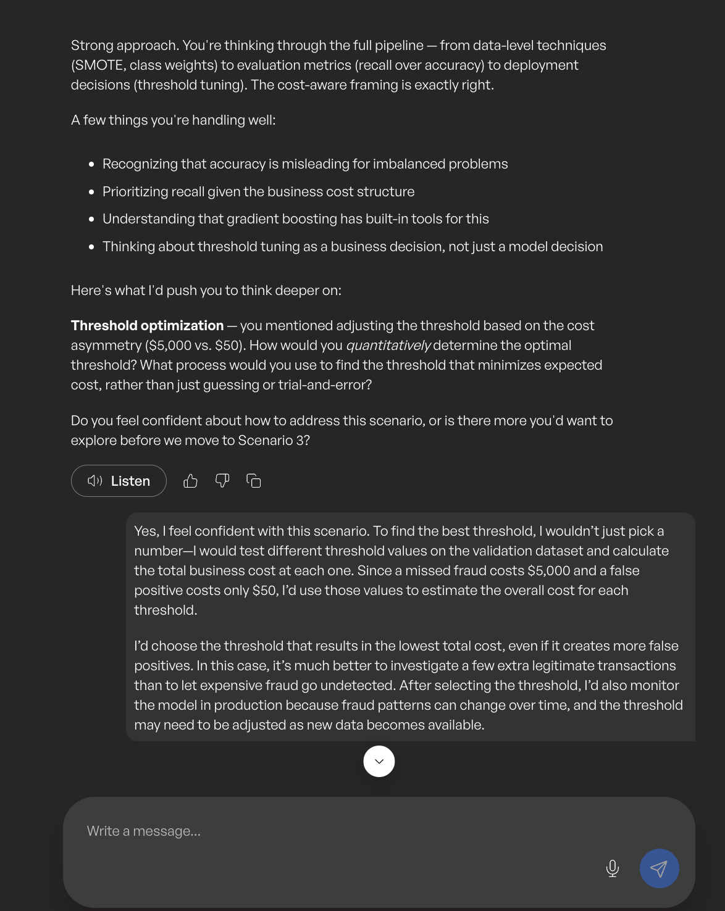
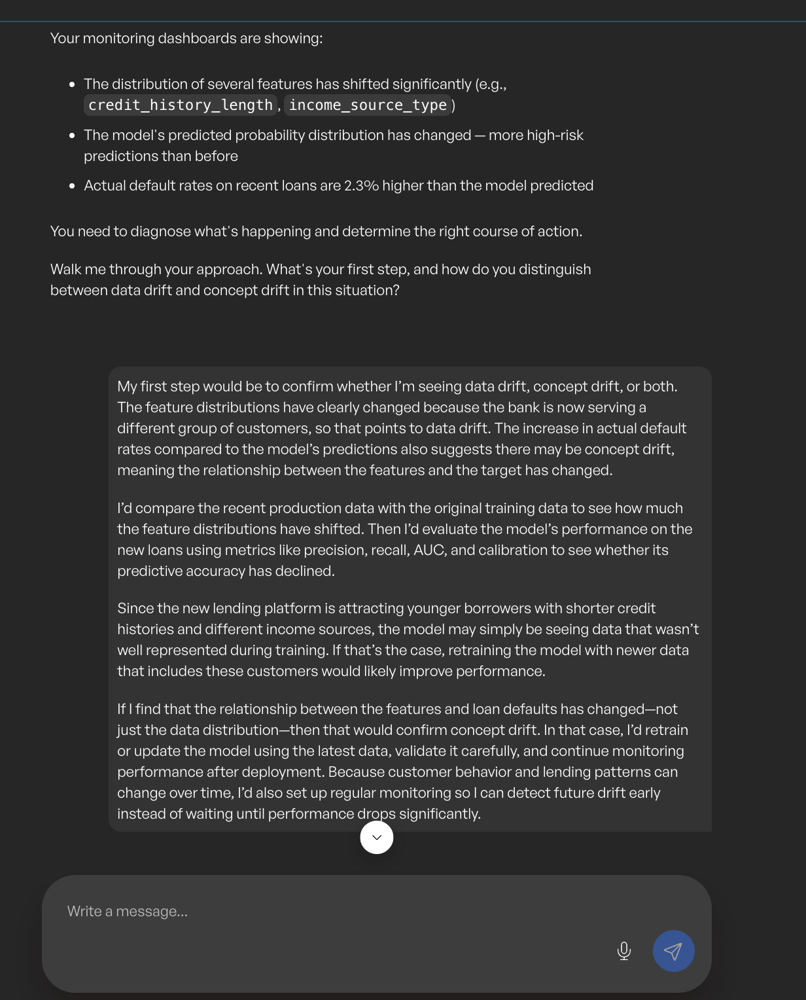
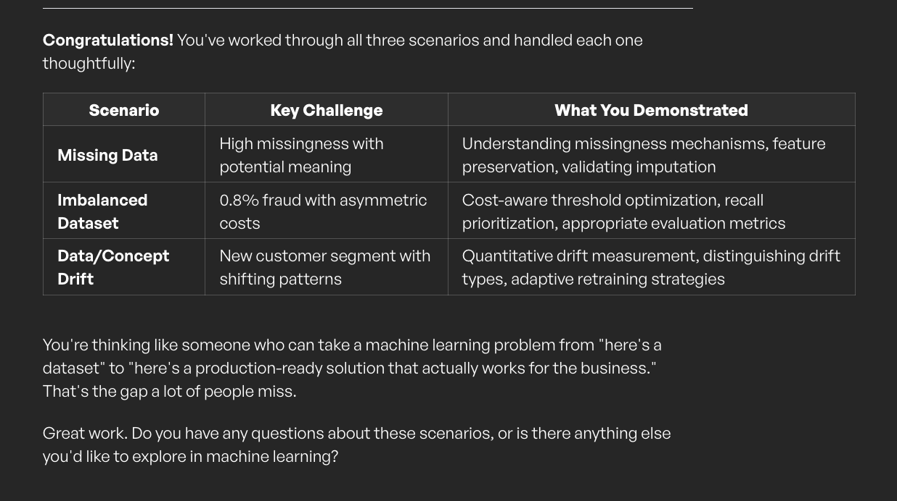

Introduction
Solving practical machine learning problems
This artifact documents an inquiry-based learning activity in which I analyzed three realistic machine learning scenarios. The activity focused on preparing incomplete data, handling severe class imbalance, and diagnosing changes in production data and model behavior.
The discussion also extended into production monitoring and the additional challenges created when traditional machine learning systems are integrated with large language models.
Description
Project overview
The activity followed a guided scenario-and- feedback format. I first proposed a solution, explained my reasoning, reviewed feedback from the AI coach, and then revised my response to strengthen the technical and business analysis.
The three scenarios addressed customer churn data with missing values, fraud detection with only 0.8% fraudulent transactions, and a credit risk model affected by a new digital lending customer segment.
Objective
Project goal
The objective was to apply foundational machine learning concepts to realistic business situations and demonstrate how technical decisions should be validated before models are deployed or updated.
- Select appropriate strategies for handling missing values.
- Evaluate imbalanced classification using business-relevant metrics.
- Optimize prediction thresholds using financial costs.
- Distinguish data drift from concept drift.
- Recommend practical model-monitoring and maintenance strategies.
Key Concepts
Machine learning challenges addressed
Missing Data Analysis
I investigated why values were missing before selecting an imputation method and considered whether missingness itself contained predictive information.
Feature Preservation
Before dropping a highly incomplete feature, I evaluated feature importance, churn-rate differences, and missing-value indicators.
Imbalanced Classification
I used class weighting, SMOTE, recall, precision, F1-score, and confusion matrices instead of relying on accuracy.
Cost-Sensitive Thresholds
I selected the fraud threshold by comparing the total expected cost of false negatives and false positives on validation data.
Data and Concept Drift
I distinguished changes in feature distributions from changes in the relationship between features and outcomes.
Production Monitoring
I examined performance metrics, data quality, drift detection, alerts, explainability, retraining, and model versioning.
Scenario-based solution process
Investigate the data
Identify missingness patterns, class distributions, segment differences, and potential data quality issues.
Define the business risk
Determine which errors are most costly and which model behavior matters most to the organization.
Select the method
Choose suitable imputation, resampling, class-weighting, evaluation, or drift-detection techniques.
Validate the decision
Compare distributions, model metrics, business costs, calibration, and segment performance.
Revise using feedback
Strengthen the initial solution by adding quantitative checks and production considerations.
Monitor after deployment
Track data quality, drift, performance, operational metrics, and business outcomes over time.
Monitoring large language model systems
Compared with traditional machine learning, large language models introduce additional monitoring concerns because their outputs can be non-deterministic, difficult to score, and sensitive to prompt changes and context.
- Monitor hallucinations and factual accuracy.
- Track prompt versions and model settings.
- Evaluate safety, bias, and jailbreak risks.
- Monitor retrieval quality and tool usage.
- Track token cost, latency, and consistency.
Process
How the artifact was developed
Reviewed each scenario
I identified the technical problem, available data, and business constraints.
Developed an initial response
I proposed a practical approach and explained the reasoning behind each decision.
Reviewed coaching feedback
The AI coach identified areas where I could add stronger validation, quantitative testing, or business analysis.
Revised the solution
I added feature-importance checks, imputation validation, cost-based threshold testing, and statistical drift methods.
Extended the inquiry
I asked additional questions about production monitoring and the maintenance of LLM-enabled systems.
Revised for the portfolio
I transformed the conversation into a professional report and web-based portfolio case study with supporting evidence.
Tools and Technologies
Tools used
Lessons Learned
What I learned
This activity strengthened my understanding that machine learning decisions must be based on the meaning of the data, the cost of model errors, and evidence from validation rather than assumptions.
I also learned that deployment is not the end of the machine learning lifecycle. Models must be monitored for performance degradation, data quality problems, changing customer behavior, and evolving business requirements.
Artifact-Specific Value Proposition
Unique value and relevance
Unique Value
This artifact demonstrates my ability to analyze incomplete and imbalanced data, evaluate model behavior using business costs, diagnose production drift, and improve solutions through structured feedback.
Professional Relevance
This work is relevant to organizations that rely on machine learning for customer retention, fraud detection, credit risk, and AI-enabled decision support. It shows that I can connect technical methods with operational reliability and business impact.
Evidence
Scenario evidence and complete report






Complete Report
Applying Machine Learning to Real-World Data Challenges
Review the complete inquiry-based learning report, revised solutions, and key conclusions.
View Complete Report